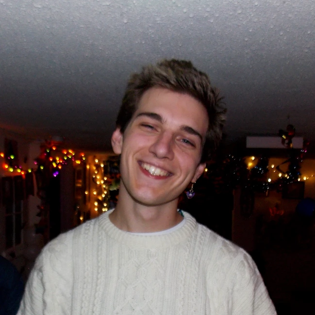

Jett Pavlica is a computational artist from Durham, North Carolina. Their work exists at the intersection of art and science, visualizing the output of countless computer programs working harmoniously to color a pixel, project light on the wall, or drag a pen across paper. Classic algorithms, physical simulations, and generative organic forms are frequent areas of exploration.
Jett is a founding member of the Durham Powerful Arts Collective where they design unique digital experiences and community engagement events that celebrate art and creativity within Durham.